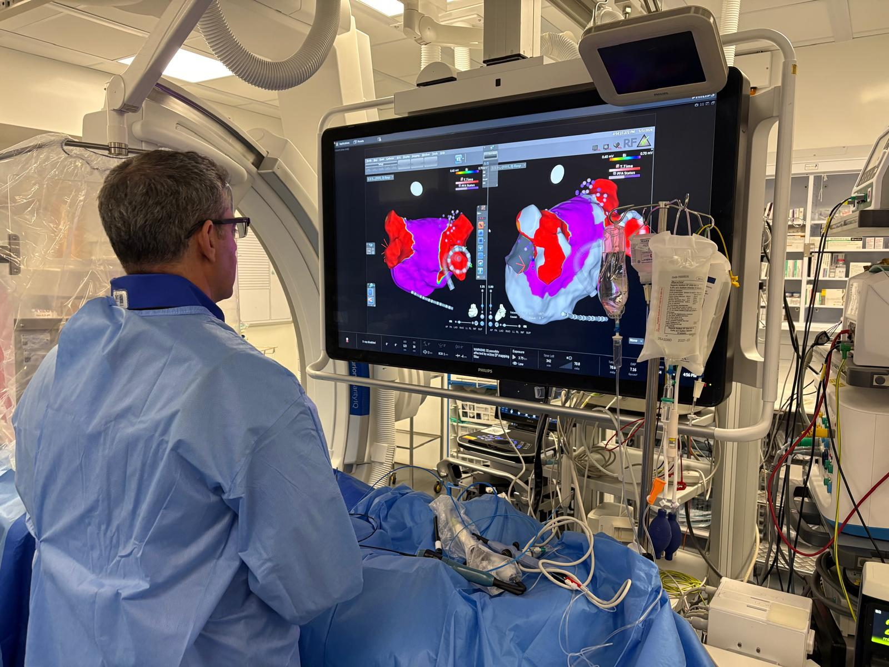

Εξειδίκευση
Ασθενοκεντρική Φροντίδα Αρρυθμιών
Οι αρρυθμίες μπορούν να προκαλέσουν συμπτώματα όπως
Αίσθημα Παλμών
Αίσθηση γρήγορου καρδιακού παλμού ή/και χαμένων ή επιπλέον παλμών
Κόπωση
Κούραση και μειωμένη ικανότητα άσκησης σε σχέση με το φυσιολογικό
Δύσπνοια
Δυσκολία στην αναπνοή σε ηρεμία ή κατά την προσπάθεια
Θωρακικός Πόνος
Δυσφορία ή σφίξιμο στο στήθος
Αίσθημα Λιποθυμίας ή Ζάλης
Ζάλη ή προλιποθυμική αίσθηση
Λιποθυμία
Αιφνίδια απώλεια συνείδησης
Οι περισσότερες αρρυθμίες μπορούν να επηρεάσουν σημαντικά την ποιότητα ζωής και ορισμένες σοβαρές αρρυθμίες μπορεί να είναι απειλητικές για τη ζωή.
Τύποι αρρυθμιών (με συνδέσμους προς το Arrhythmia Alliance UK)
Κολπική Μαρμαρυγή (AF)
Μάθετε περισσότερα →
Κολπικός Πτερυγισμός
Μάθετε περισσότερα →
Κολπική Ταχυκαρδία
Υπερκοιλιακή Ταχυκαρδία (SVT) — συμπεριλαμβανομένων WPW/AVRT & AVNRT
Μάθετε περισσότερα →
Κοιλιακή Ταχυκαρδία (VT)
Μάθετε περισσότερα →
Κοιλιακές Έκτακτες Συστολές
Μάθετε περισσότερα →
Κολποκοιλιακός Αποκλεισμός
Μάθετε περισσότερα →
Σύνδρομο Νοσούντος Φλεβοκόμβου
Μάθετε περισσότερα →
Δυσσυγχρονισμός
Μάθετε περισσότερα →
Καρδιακή Ανεπάρκεια (σχετιζόμενη με αρρυθμία)
Ο Dr Andreas Kyriacou παρέχει εξειδικευμένη αξιολόγηση και θεραπεία, όπως ηλεκτροφυσιολογικές (EP) επεμβάσεις και καταλύσεις, για ένα ευρύ φάσμα διαταραχών του καρδιακού ρυθμού και σχετικών παθήσεων.
Διαγνωστικές Εξετάσεις

Εργαστήριο Καρδιακού Καθετηριασμού — κατάλυση AF από τον Dr A. Kyriacou